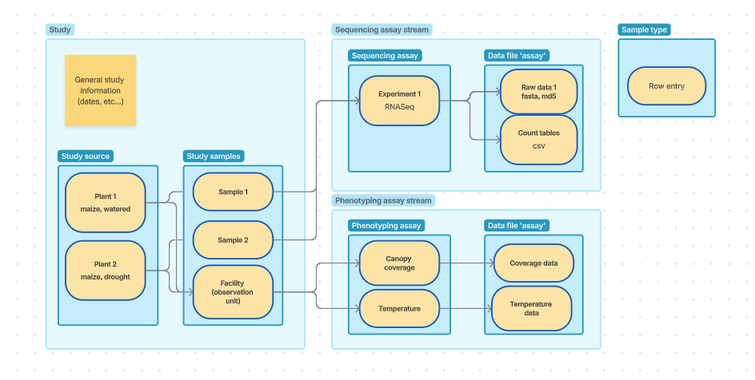

Instructions for researchers entering metadata in the catalogue¶
Contents¶
- Introduction
- Process outline
- ISA FairdomSEEK structure
- MIAPPE and ENA in FairdomSEEK
- Detailed instructions
- Phase 0
- Phase 1
- Phase 2
- Phase 3
- Reference instructions
- Naming conventions
- References inside sample templates
- Defining assays
- Registering data files
- Grouping samples
- High level example
- Short guide
Introduction¶
The ResilienceHub uses FairdomSEEK with ISA settings as the metadata catalogue. This document describes how metadata can be uploaded in the right format. This document contains a detailed step by step guide for first time data entry. A shorter reference guide for additional studies will be included later.
There is a format to stick to, but also the format accommodates for many type of studies, so it leaves room to fill out differently. This puts some responsibility on the researcher for how to use this format and to really understand the model. The documents guide you through the choices you need to make, and how you can make them. Do plan time for this, especially the first time. If you are stuck at any point, things are unclear or you need help, please reach out to the DataXR team at data@cropxr.org
Process outline¶
We suggest you do phase 0 a few days before you plan to do your metadata entry and that you do step 1 and 2 in one session.
Phase 0: preparations¶
Get an overview over the process and prepare data entry. Importantly, read this document all the way through (except the detailed step-wise instructions of phase 2, 3 and 4). Try to understand the process, the metadata model, and the concepts. You will define the study by choosing what experiments to include and make sure you are registered upfront. An admin from DataXR might need to approve requests, so make sure to do this a few days before your planned data entry. You gather files that contain metadata regarding your study.
Phase 1: define study, assays and sample templates¶
In the web interface, create (an investigation and) study. Choose what fields to include in your study to properly capture the metadata. Define assays for the experiments performed in the study.
Phase 2: critical metadata entry¶
Decide how to the metadata should be entered, to capture all information that is needed, by grouping conditions and samples. In the web interface, fill in all the fields that are essential to understand the study, focusing on key aspects, such as species and assay type. In this phase you also link the data to the performed experiments, so others can find and understand your data.
Phase 3: improving metadata¶
When the fields have been defined, at any point in time you can save the metadata and edit it later. Add the additional metadata that was collected, and improves the re-usability of your data. You can also manage who can see your metadata at any time.
ISA FairdomSEEK structure¶
The ISA format is widely used to represent research data. It is often used to represent MIAPPE data. FairdomSEEK uses the ISA structure, somewhat adapted.
Assay and sample definition¶
In the ISA format, you can perform assays on samples. It assumes that in an experiment, there are several steps called a process. Each process has an input and an output and a protocol, that describes how the output was created from the input. The input can be either a material or data, and the output as well. These processes can be chained together. Here is an example:
step 1 sample collection (input plant material-> output sample)
step 2 DNA extraction and library prep (input sample -> output sample)
step 3 sequencing (input sample -> output data)
step 4 analysis (input data -> output data)
In ISA these processes are organized the following way: the study contains 1 process with a material input (study source) to a material output (study sample). The other processes, however many needed, are grouped under the assay. The assay can consist of several steps/processes and starts with the study sample.
ISA in FairdomSEEK¶
In FairdomSEEK, the processes that are grouped under the assay, are all called an assay even if the input and output are both a material object, or both data files. This does not fit with the classical meaning of the word ‘assay’, but it implements the same functionality as ISA. The assays can be connected into an assay stream.
Each row, that can describe a sample, but also an assay performed on a sample, or a derivation of a data file, is called always a ‘sample’ in FairdomSEEK.
MIAPPE and ENA in FairdomSEEK¶
[todo: write]

intro to data model
Observation units and samples¶
Level where a measurement is done.
Whole greenhouse, per plot, plant, sample.
Detailed instructions¶
Phase 0¶
-
Understand the basic structure of the metadata model.
-
Decide on the what experiments to group into (the investigation and) the study.
-
Choose the study type (sequencing, phenotyping or combined). Inform DataXR well up front when your study does not fit these types.
-
Make sure that you have registered your study in this form. After the admin has checked the registration, you will receive a study id you need when entering the metadata, as well as storage for your experimental data.
-
Create an account for the catalogue and log in. [Write about normal or KeyCloak?]
Request to be added to a project. This is done by a project admin.
-
Gather the files with the metadata that you already collected. This includes e-lab journal entries, files that outline experimental conditions per plant, files that link output files to the experiment, etc.
Phase 1¶
-
Log in to the FairdomSEEK webpage.
-
Find or create an investigation.
- To find an investigation, click on “🔎Browse” (click the menu first when using a narrow window) in the top left corner and select “Investigations”.
-
If your investigation is not yet registered, click on “➕Create” and select “Investigations”. Add a Title and select a Project and click on “Create”.
-
From within the investigation, create a new study by clicking “➕Design Study” at the top.
- Create a tile using the naming convention.
-
Choose the extended metadata type that is relevant for your study.
Of the extended metadata, only fill the mandatory fields for now (to be able to save). The other fields can still be entered later. Quickly skim the fields so you are aware of what is collected on study level.
-
For now, skip the fields “Study position”, “Sharing”, “Creators”, “Publications”, and “Discussion Channels”. The fields “Sharing”, “Creators”, “Publications” can be reviewed and modified later.
-
At “Define Sample type for Source”, select an “Existing template”. Choose the default template “CropXR source” and click “Apply”. Now review the predefined parameters that are collected for the study source. These are the fields that will be used to describe your experimental setup and conditions. If there are any missing, you can add them at the bottom by selecting “➕Add new attribute”. Make sure that the column “ISA Tag” is set to “source_characteristic”. Additional fields can also be added later.
In MIAPPE there are many suggestions for environmental parameters and experimental factors to collect. Please reference these lists, to get a predictable field name.
Please do not remove any fields; this will make your study harder to find. All fields not relevant to your study can be left empty.

-
Skip “SOPs” for now, these will be added later.
-
At “Define Sample type for Sample” at select an “Existing template” you need to “Choose a template” in the drop down selection. Now select, depending on the units of measurement in your study: “CropXR sample” when there are samples only, “CropXR sample or observation unit” if there are both samples in your study as well as measurements on a different level, and “CropXR observation unit” when there are no samples. Choose the latest version of the template you need, and click “Apply”. Here you can also check the fields and add additional fields when needed, as describe for the source, while it is likely not needed.
-
Click on “🟦Create”
-
Make a plan for how to define the Assay Streams and Assays. (read here)
-
Click on “➕Design Assay Stream” at the top of the study, enter a title (following the naming convention).
If needed, select the “Extended metadata” for the assay stream. Skip all other fields for now and click on “🟦Create”.
- From the created Assay Stream, create an assay by clicking “➕Design Assay”
- Enter a title (following the naming convention)
- For now skip the fields “Sharing”, “Creators”, “SOPs”, “Publications”, “Documents” and “Channel discussions”.
- At “Define Sample type for Assay” start at the “Existing Templates”. Depending on the type of assay you are making (based on the plan made in step 4), change the “ISA Level” drop down to “assay - data file” or leave it as is. Choose the latest version of the relevant template in the drop down menu and “Apply”.
- The sample type can be expanded with additional columns that should be included as metadata. This is relevant for assays where most parameters are kept constant, but some are varied between measurements/samples. If the fields is related to the assay performed, the column “ISA Tag” should be set to “parameter_value”, if it is about the output data file set it to “data_file_characteristic”.
- If needed (not included already in the assay), create the next assay of the type data file for the raw data.
- If needed, create the next assay of the type data file for the derived data.
Now you have the outline of your metadata structure. The actual metadata can be uploaded.
Phase 2¶
Not all steps need to happen in this exact order, but some steps are dependent on each other: study sources need to be created before study samples and study samples before assay row entries. Data files need to be registered before they can be referenced.
- Register your data files
- At the top menu under “➕Create” choose “Data file”
- Choose how you want to register your data. Find the URL at the data location (Research Drive).
- Under the tab “Remote URL” past the URL of the data location and “🟦Register”. Do not mind a warning about the URL in a yellow box. If there is an error and the URL cannot be registered please check if the URL is correct.
- Fill in a “Title”, a “Description”, select a “Project”, click “🟦Next, and “🟦Next”
- Select a license. The license can be adapted later if needed. At no license the consortium agreement applies to all people users that this data is shared with.
- Adapt the sharing of the data, either on group level or per group. At a later stage, the permissions set here automatically apply to where the data is stored. For now, that is still handled separately in the research drive.
-
Skip “Associated Assays” and “Other associated items”by clicking “🟦Next, and “🟦Create”
-
Add SOPs (Standard operating procedure) (can also be done later). Each step can reference a protocol that was used: creation of samples and the grouping of observation units at the study level, the assaying protocols at assay level and the data transformation steps.
- At the top menu under “➕Create” choose “SOP”
- Click “Browse” to upload a local file.
- Add a “Title”. This needs to be specific enough to find the SOP back between other SOPs from different studies.
- Add a “Description”, select a “Project” and a “License”. Skip “Discussion Channels”, adapt “Sharing”, skip “Creators”, “Tags” and “Attributions”
- If the SOP is related to an assay, it can be linked under “Experimental assays and Modelling analyses”. This can also be done at the assay.
- If a data processing step is described by a registered workflow/processing pipeline, it can be linked under “Workflows”.
-
Click “🟦Register”
-
Edit the study by going to “⚙️Actions” in the top corner and then “📝Edit ISA Study”
- Fill in the description
- Fill in extended metadata. Focus on the fields most relevant to understand the study. Skip the fields that do not apply. The fields can always be revised later.
- Under “SOPs” select the SOP(s) that describe the sampling and the experimental design map.
-
Click “🟦Update” to apply the changes.
-
Define study source samples
- Choose how to group/define the sources.
- Go to the “Sources table”, by clicking the tab “Study design” (or from the “Single page” view find the “Sources table” in the left menu). Here you find a table with the columns that you have defined.
- Download the template by clicking the button “Batch download to Excel”.
- In the excel, under the Samples tab fill in the data in the fields.
- Ignore the first two columns.
- The Source Name is the name that will be displayed.
- Start with the most relevant fields to understand the study and the sources used. The data can be improved on at a later point. Fill in at least the species and the experimental group.
-
Save the file. Upload it by under “Upload excel spreadsheet” select “Browse” and click “🟦Upload”. Now there might be an error message. Please read it carefully and adjust the data accordingly.
Be aware, if you upload the same excel multiple times, a new sample will be created with the same name. To check how to update existing samples, check the phase 3 instructions.
-
Define study samples
- Choose what type are needed.
- Go to “Samples table” under “Study design”(or from the “Single page” view find the “Samples table” in the left menu).
- Download the template by clicking the button “Batch download to Excel”.
- In the excel, under the Samples tab fill in the data in the fields.
- Ignore the first two columns.
- Use the Input column to link to a source defined in the previous step.
- The subject_id is the name that will be displayed.
- There is a mandatory column called protocol. The text should refer to a registered SOP.
- Start with the most relevant fields. The data can be improved on at a later point.
-
Save the file. Upload it by under “Upload excel spreadsheet” select “Browse” and click “🟦Upload”. Now there might be an error message. Please read it carefully and adjust the data accordingly.
-
Fill in the assay stream extended metadata by going to “⚙️Actions” in the top corner and then “📝Edit Assay Stream”. Focus on the fields that are most important and “🟦Update” to save.
-
For each assay defined in phase 1, enter the row data, the same way as the study source and sample: download the template, fill in the data, save and upload the template.
- For the first assay of an assay stream the input should be a study sample (so this is a sample of observation unit). For additional assays the input is an output of the previous assay.
- To link a registered data file as file location, use the required format.
- For the file name, use the relative path of the exact file inside the registered file location.
Phase 3¶
- Update the sharing permissions that each of the created elements have. Think about who should see your study. If you are collaborating with others you can give them edit permission. You can edit them by navigating to the Study/Assay/DataFile/SOP, clicking “⚙️Actions” in the top corner and then “🔧Manage ..” After making the changes make sure to “🟦Update”
Note that in the future the permission you set in SEEK on the data file will be automatically set where the data is stored, but for now the permission is still set separately within the Research Drive.
-
Update the study and assay extended metadata to make the metadata more complete (under “ “⚙️Actions” in the top corner and then “📝Edit ..”)
-
Updating existing samples [todo: expand]
- make sure it’s selected before downloaded, so there is no new sample with the same name
-
You can upload multiple in multiple steps, but be aware that if you re-upload samples with the same name, a new sample will be created. Only upload new samples.
-
Adding additional columns [todo: expand] (under “ “⚙️Actions” in the top corner and then “📝Edit ..”)
Reference instructions¶
Naming conventions¶
[todo: finish]
Study:
<received study id> - <study name>
example “CXRS4 - Drought response of arabidopsis after hormal treatment with PAMP”
Assay stream:
<received study id> - <descriptive assay name>
Assay:
References inside sample templates¶
Sample inputs¶
Unfortunately in FairdomSEEK the names of the samples are not used as identifiers. For this reason the column where you link to samples from the previous section (marked Input) needs to be formatted like this:
[{"id"=>343, "type"=>"Sample", "title"=>"yeast_wgs_02"}]
You can read more here.
When you are entering this data, it might be convenient to make a column with the ids that the catalogue has generated, and one with the sample titles, and use excel formulas to create the required format, and copy the values into the upload sheet.
="[{""id""=>"&A1&", ""type""=>""Sample"", ""title""=>"""&B1&"""}]"
Data files¶
To link a registered data file use the following format.
{"id"=>1, "type"=>"DataFile", "title"=>"File from data access layer"}
Find the data file ID, by going to the data file in the interface, and checking the number at the end of the URL https://catalogue.cropresilience.org/data_files/1
Defining assays¶
There is some flexibility in how to define assays. In FairdomSEEK, an assay (called assay stream) can be split into steps (called assays) that output material or a data file.
Default strategy¶
- Create one assay stream of each type of assay performed.
- At the assay stream, choose the extended metadata type that fits the type of assay.
- Fill in all the information that is the same for each measurement in this extended metadata fields.
- Create inside this assay stream a single assay of the type data file.
- Add fields for the parameters that are different per measurement.
- Is the rows/samples of the assay to link the output files of the assay to the measured unit/plant/sample.
At significant data processing¶
Create a next assay in the same assay stream. The protocol contains the performed data processing step. The output files can be explicitly linked to the input files.
Top level sensors¶
Top level environmental measurements, with no distinction between rows/samples, can be grouped together in a single assay stream. This allows for linking the data files with the specs of the measurement/instrument, without a large part of the interface being taken up by sensor measurements, that are not relevant for the understanding the study.
- Create assay stream for these grouped measurements. Do not choose any extended metadata.
- Create an assay of the type observation with a material output. In this assay each row describes a type of measurement done.
- Create a next assay of the type data file. Each row links the output file to the described measurement.
Multiple files per experiment¶
[rewrite]
If there are still different experimental conditions or if there are multiple data files per experiment: split into assay and data file separately. Add the different parameter on the assay, and link the files in the second data file assay
Limitation¶
It is not possible to link derived data files to input files from multiple assay streams. There is no clear place to list key output artifacts, that summarize the conclusions of the study.
Registering data files¶
You can register a URL that contains a file or a folder.
The advise is to register a folder that is both
easy to navigate inside,
containing for example only one data type and no different types of sub-folders
the same permissions apply to the whole folder
An example would be: the all raw reads of a sequencing experiment.
The metadata is used to link certain experiments and samples to the files. Here you can indicate what file in the registered folder contains what data.
At a later stage, the permission set in SEEK will be applied to the data download. If you only register the whole study as a single data file, it is not possible to apply granular permissions on who can download your data.
Grouping samples¶
[consider moving to top section explaining the model]
Study source¶
Choose the granularity that is needed for your metadata. The sources are used to specify the biological material, as well as the growth conditions. At least each experimental block needs to be defined as a separate source. If the metadata and a sample needs to be traced back to a certain plant, you might define a source per plant.
Study samples¶
The study samples section is used both for samples, as well as for defining observation units. Observation units are any level, where a measurement/observation is done. How to define this will depend on the specific design of a study, and typically be the unit for which each experiment generates a file. Think about the assays and the data files when defining the observation units.
High level example¶
Experimental design¶
2 varieties (col-0, ler) and 2 watering regimes (well watered, drought) -> 4 experimental groups. Measurements: - RNA-seq of root and and leaf samples - Canopy coverage per experimental group - Some general measurements from the greenhouse.
Study general¶
Choose combined sequencing and phenotyping study. Add SOP with experimental design map for MIAPPE.
Study source¶
Create one source per experimental group. Specify the variety and watering regime. Add additional information that is relevant.
Study samples¶
Create samples of type ‘sample’ for each root sample taken. The input is the source of the experimental group that the plant was grown in. Specify the plant structure/anatomical entity as root.
Create samples for the leave samples in the same way.
Create samples of type ‘observation_unit’ for each experimental group. The level is ‘plot’. The input is the source of that experimental group.
Create a sample of type ‘observation_unit’ that combine all sources. The level is ‘greenhouse’.
Assays¶
Create one phenotyping assay stream for canopy coverage and fill in all the information about the trait and the method. Create an assay with as output a data file. Create a row for each separate measurement/experimental group, with as input the observation unit plots. Describe the output data file of the measurement and link to the data.
Create one sequencing assay stream. Describe the library construction and sequencing. Create an assay with as output a data file. Create a row for each measurement, with as input a sample. Describe the output data file of the measurement and link to the data.
Create one phenotyping assay stream for the greenhouse sensors. Create an assay for the measurements of the output material with the template observation. Define one row per environment variable measured by the greenhouse sensors, describing the variable, the sensor and the scale. This can be one row for temperature and one for humidity. The input is the study observation unit greenhouse. Create a next assay in the stream for the data files, one row for each file, with as input the assay row defined in the previous assay. Describe the and link to the data.
Short guide¶
Prepare
- register the study in the form and get storage
- gather relevant documents, such as lab notes and experimental design overviews
Start with the metadata entry in FairdomSEEK
- create a study
- choose an extended metadata type
- set the sharing of the study
- choose a template for the study source. Add additional fields if needed.
- choose a template for the study sample (sample only, observation unit, or combined)
- for each assay type create an assay stream
- select the right extended metadata
- set the sharing
- within the assay stream create one or more assays
- choose a sample template that fits the type of assay (choose between material and data file + choose the full or condensed + choose sequencing or observation)
- add additional fields if needed
- add additional assays for data files that were generate from the first assay output
Now the study has been defined, continue with the minimally needed metadata.
- Register Data files by linking the URL to the file or folder. Manage the permissions on the file.
- Register protocols under SOPs and manage the permissions.
- Edit the study to fill the extend metadata and link SOPs.
- Define sources, based on your specific study and the level of granularity needed.
Enter the data by downloading the template, filling the data and uploading. 10. Define samples/observation units, based on your specific study and the level of granularity needed.
Enter the data by downloading the template, filling the data, referencing the study sources by name and id, and uploading the template in the interface.
- Edit assay metadata
- Enter assay row data + link data files
Now that the minimal metadata is added, continue improving the metadata.
- adapt permissions
- update with additional data